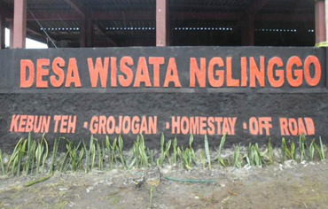
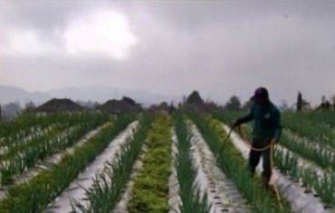
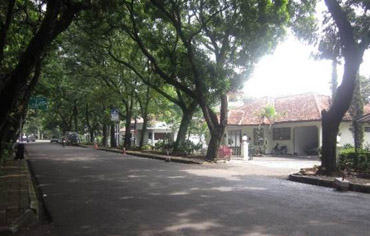
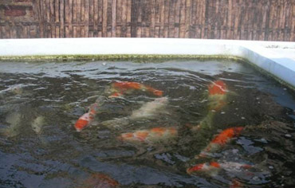
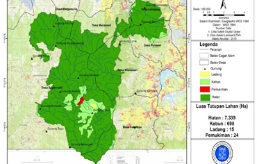
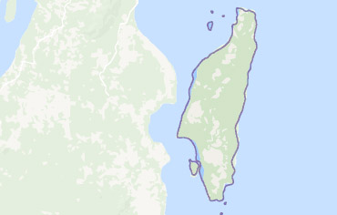
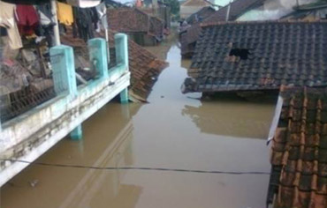

- Pembimbing:
Dr. Endah Sulistyawati
Dr. Yooce Yustiana - Rr. Yuliana Eka Prabandari, M.Si
2016
Pengembangan Pariwisata Perdesaan Berkelanjutan
(Studi Kasus Desa Wisata Nglinggo, Kabupaten Kulon Progo, DI Yogyakarta)
Dalam beberapa tahun terakhir pertumbuhan desa wisata di Indonesia yang difasilitasi oleh Program Nasional Pemberdayaan Masyarakat (PNPM) Mandiri Pariwisata semakin pesat. Pembangunan desa wisata yang cenderung hanya dari sisi kuantitatif pada akhirnya membuat kualitas desa wisata yang ada kurang diperhatikan. Kondisi ini perlu diimbangi dengan usaha pengembangan pariwisata perdesaan yang berkelanjutan agar jasa lingkungan pariwisata dimanfaatkan dengan bijak.
Tujuan utama penelitian ini adalah menyusun rencana strategis pengembangan pariwisata perdesaan berkelanjutan di Desa Wisata Nglinggo (DWL), Kabupaten Kulon Progo, DI Yogyakarta. Selain itu, penelitian ini juga bertujuan untuk mengidentifikasi dan mengukur tingkat kelayakan produk wisata yang ditawarkan oleh DWL serta mengukur nilai manfaat wisata di DWL. Metode penelitian yang digunakan untuk mencapai tujuan-tujuan tersebut meliputi analisis deskriptif untuk menginterpretasikan data, metode scoring untuk menilai tingkat kelayakan produk wisata, ITCM (Individual Travel Cost Method) untuk menilai manfaat wisata, metode SWOT (Strenghts, Weaknesses, Opportunities, and Threats) untuk merumuskan strategi pengembangan, dan metode QSPM (Quantitative Strategic Planning Matrix) untuk menentukan urutan prioritas strategi-strategi tersebut.
Hasil penelitian ini menunjukkan bahwa DWL memiliki produk wisata beragam yang meliputi daya tarik wisata alam dan budaya, fasilitas pokok dan penunjang wisata, aksesibilitas yang mendukung experienced level perjalanan wisata, dan pengelolaan yang melibatkan masyarakat lokal dengan pelayanan yang ramah. Sesuai dengan kondisi pariwisata DWL maka rencana strategis pengembangan pariwisata perdesaan berkelanjutan di DWL diprioritaskan pada tiga hal, yaitu pengemasan seluruh potensi wisata, optimalisasi peran industri rumah tangga, dan penyusunan pedoman pengelolaan desa wisata.

- Pembimbing:
Prof. Intan Ahmad
Dr. Endang Hernawan - Merry Prafithriasari, M.Si
2016
Analisis Peluang Usaha tani Sayuran Organik pada
Kelompok Tani Konvensional di Kabupaten Cianjur Berdasarkan Indikator Pertanian Berkelanjutan
Keberlanjutan pertanian tidak dapat dipisahkan dari dimensi ekonomi, lingkungan dan sosial. Pertanian organik merupakan salah satu wujud pertanian berkelanjutan yang mampu meniadakan penggunaan input sintetis (pupuk dan pestisida kimia) dan mengembalikan sumber bahan organik ke dalam tanah. Tujuan penelitian adalah menganalisis peluang diterapkannya praktek usahatani sayuran organik pada tingkat kelompok tani berdasarkan indikator pertanian berkelanjutan di Kabupaten Cianjur. Metode verifikasi data digunakan untuk menilai kriteria dan indikator pertanian berkelanjutan pada tingkat petani. Kriteria yang digunakan meliputi aspek lingkungan, sosial, dan ekonomi dengan 10 indikator dan 29 verifier. Jumlah sampel yang diukur terdiri dari dua kelompok responden, yaitu kelompok tani sayuran konvensional dan kebun organik sebagai kontrol.
Hasil penelitian menunjukkan nilai persentase kriteria untuk kelompok tani konvensional yaitu 55,60% (Aspek Lingkungan 24,44%, Aspek Ekonomi 14,49% dan Aspek Sosial 16,67%). Adapun, untuk kebun organik (kontrol) diperoleh nilai persentase kriteria 90,67% (Aspek Lingkungan 31,85%, Aspek Ekonomi 28,89% dan Aspek Sosial 30%). Dari hasil identifikasi faktor internal dan eksternal, diketahui bahwa posisi kelompok tani konvensional berada pada kuadran V (hold and maintain) dan kebun organik berada pada kuadran IV (growth and build). Hasil analisis matriks SWOT menghasilkan empat strategi untuk setiap kelompok tani yang kemudian dilakukan pemeringkatan strategi dengan menggunakan Matriks QSPM. Prioritas strategi untuk kelompok tani konvensional adalah membentuk lembaga/asosiasi petani sayuran organik di tingkat kabupaten dan prioritas strategi untuk kebun organik adalah meningkatkan jumlah produksi dan melakukan riset pasar untuk memperluas jaringan distribusi sayuran organik.

- Pembimbing:
Dr. Mia Rosmiati
Dr. Angga Dwiartama - Reina Yulianti, M.Si
2016
Kajian Aspek Sosial, Lingkungan Dan Vegetasi Jalur Hijau Perkotaan: Studi Kasus di Jalur Hijau Jalan Taman Tegalega Dan Taman Maluku, Kota Bandung
Jalur Hijau merupakan bagian dari Ruang Terbuka Hijau (RTH) perkotaan yang di antaranya memiliki fungsi sebagai penyeimbang ekologis (penyerap polusi, daerah resapan air, serta koridor dan habitat bagi satwa). Kota Bandung telah mengembangkan konsep RTH melalui green network dengan menghubungkan RTH yang satu dengan RTH yang lainnya melalui jalur hijau. Namun demikian pengelolaan yang tidak tepat dapat membuat pencapaian terhadap fungsi dari jalur hijau kurang optimal.
Penelitian ini bertujuan untuk mengkaji fungsi dari jalur hijau sebagai koridor hijau penghubung Taman Tegalega dan Taman Maluku. Lokasi Jalur hijau yang diamati yaitu: jalur hijau Jalan Tegalega, Jalan Alun-Alun, Jalan Asia Afrika, Jalan Sunda, dan Jalan Sumbawa. Metode penelitian yang digunakan adalah metode survey dengan teknik pengambilan sampel dilakukan secara accidental sampling melalui penyebaran kuesioner dan purposive sampling melalui wawancara kepada narasumber dari dinas terkait dan ahli di bidang ekologi hewan dan tumbuhan. Data dianalisis untuk mengevaluasi jalur hijau dan menilai presepsi resonden terhadap pengelolaannya. Observasi langsung dilakukan dengan melakukan survey vegetasi dan kondisi fisika kimia lingkungan. Data vegetasi dianalisis menggunakan Scoring Assessment Method dengan variabel penilaian fungsi ekologis dan konservasi.
Dari hasil analisis diketahui bahwa hasil evaluasi responden mengenai fungsi, keragaman hayati, dan pengelolaan kelima jalur hijau dalam kategori baik. Respon partisipasi responden untuk berpartisipasi dalam pengelolaan sangat positif. Hasil Scoring Assessment Method terhadap vegetasi menunjukkan bahwa jalur hijau Sumbawa adalah jalur yang kondisinya paling baik untuk mendukung fungsi jalur hijau sebagai koridor hijau perkotaan.

- Pembimbing:
Dr. Rina Ratnasih - Annisa Nurbaety, M.Si
2016
Analisis Implementasi Program Corporate Social Responsibility (CSR) Di PT. Bio Farma
CSR merupakan tanggung jawab perusahaan terhadap para pemangku kepentingan dan masyarakat yang berkaitan dengan aspek sosial, ekonomi dan lingkungan sesuai dengan aktivitas perusahaan untuk mewujudkan pembangunan yang berkelanjutan. Di Indonesia pelaksanaan CSR merujuk pada regulasi pemerintah yang tertuang pada Undang-Undang No. 40 Pasal 74 Tahun 2007 tentang Perseroan Terbatas. Aktivitas CSR kurang terkendali karena adanya perbedaan pemahaman baik dalam konsep maupun penerapannya.
Penelitian ini bertujuan untuk mengevaluasi program CSR di PT Bio Farma dan merekomendasikan strategi yang tepat sasaran dengan tujuan CSR. Lokasi penelitian dilaksanakan di Desa Sukamulya, Sukabumi, salah satu lokasi implementasi CSR PT. Bio Farma yang berfokus pada budidaya koi. Metode kerja dalam penelitian ini dibagi menjadi dua tahap, yaitu tahap evaluasi, menggunakan kerangka konseptual dengan analisis deskriptif dan rekomendasi teknis, serta tahap penyusunan rekomendasi dan strategi, menggunakan analisis SWOT. Pengumpulan data dilakukan dengan mewawancarai staf CSR, mengumpulkan data sekunder dan observasi langsung di Desa Sukamulya.
Berdasarkan sintesis kerangka konseptual, dari 17 kriteria, sebanyak 12 telah dipenuhi oleh implementasi CSR PT Bio Farma di Desa Sukamulya dengan hasil yang memuaskan. Analisis SWOT menunjukkan bahwa posisi strategis CSR PT Bio Farma di Desa Sukamulya adalah Agressive. Berdasarkan hasil tersebut, maka usulan strategi pengembangan yang dapat diterapkan meliputi pengembangan pertanian terpadu yang terintegrasi dengan budidaya ikan koi, peningkatan produktivitas budidaya ikan koi dengan orientasi pasar dalam dan luar negeri dan pembukaan lapangan kerja yang baru berdasarkan potensi desa di bidang pertanian dan perikanan.

- Pembimbing:
Dr. Devi N. Choesin
Dr. Hikmat Ramdan - Riky Firmansyah, M.Si
2016
Analisis Potensi dan Usulan Pengelolaan Jasa Ekosistem di Kawasan Cagar Alam Gunung Tilu Ciwidey
Cagar Alam Gunung Tilu (CAGT) di Jawa Barat merupakan kawasan yang berpotensi untuk menyediakan jasa ekosistem yang penting. Namun seperti kawasan cagar alam lainnya, CAGT tak terlepas dari permasalahan yang mengancam kelestarian ekosistemnya, terutama akibat aktivitas manusia. Penelitian ini bertujuan untuk: (1) menganalisis potensi jasa ekosistem kawasan CAGT; (2) mengevaluasi kegiatan pengelolaan CAGT; dan (3) memberikan usulan strategi pengelolaan untuk jasa ekosistem potensial di kawasan CAGT.
Studi pendahuluan dilakukan untuk mengidentifikasi jenis jasa ekosistem potensial di kawasan CAGT dan menentukan metode penelitian selanjutnya. Jasa ekosistem potensial di kawasan CAGT yang teridentifikasi meliputi jasa hidrologi, jasa penyerapan karbon dan jasa penyediaan tumbuhan. Metode yang digunakan adalah penghitungan biaya pengadaan air dan Willingness to Pay (WTP) untuk analisis nilai jasa hidrologi; penghitungan dinamika cadangan karbon di tingkat bentang alam untuk analisis nilai jasa penyerapan karbon; dan penggunaan tabel identifikasi jenis manfaat jasa penyediaan dari tumbuhan SNI 8014:2014 untuk analisis jasa penyediaan tumbuhan. Pendekatan balanced scorecard dan pohon solusi digunakan untuk mengevaluasi dan menyusun strategi pengelolaan CAGT.
Hasil evaluasi pengelolaan kegiatan konservasi CAGT menunjukkan kurangnya efektivitas program. Hal ini dapat mengancam keberlanjutan ketersediaan jasa ekosistem di kawasan CAGT. Usulan strategi pengelolaan jasa ekosistem di kawasan CAGT meliputi: (1) rehabilitasi sumber air dan lahan terbuka di CAGT, (2) perbaikan sarana dan prasarana air bersih, (3) pengelolaan sampah, (4) pengelolaan limbah kotoran sapi, (5) penguatan kader konservasi dan (6) pengembangan usaha produktif bagi masyarakat sekitar CAGT.

- Pembimbing:
Dr. Devi N. Choesin
- Erni Hermanawati, M.Si
2016
Analisis Keberhasilan Program Pertanian Terpadu di Kecamatan Pulau Sebuku, Kabupaten Kota Baru, Provinsi Kalimantan Selatan
Peningkatan produksi pertanian dengan pengelolaan yang berkelanjutan diperlukan untuk mendukung ketahanan pangan nasional. Pertanian terpadu merupakan salah satu bentuk pertanian ramah lingkungan yang dapat dijadikan solusi untuk membentuk ketahanan pangan. Sebagai contoh kasus, Kecamatan Pulau Sebuku merupakan kecamatan di pulau kecil Kalimantan Selatan yang mulai menerapkan program pertanian terpadu, meskipun keberhasilannya belum dievaluasi.
Tujuan penelitian ini adalah mengevaluasi program pertanian terpadu yang diterapkan dan membuat model alternatif penerapan pertanian terpadu yang lebih baik dan berkelanjutan. Evaluasi menggunakan metode analisis multi kriteria. Selanjutnya dilakukan pembobotan relatif dan penentuan skor berdasarkan data yang terkumpul. Langkah berikutnya menentukan nilai skor akhir yang menggambarkan keberhasilan penerapan program pertanian yang dievaluasi. Hasil evaluasi menunjukkan bahwa dari 10 kriteria, hanya satu kriteria pertanian terpadu yang sudah dapat diterima (skor ≥ 3) di seluruh desa, yaitu kriteria tujuan lingkungan. Kriteria lain seperti tujuan ekonomi, manajemen tanah, tujuan sosial, daya dukung pemasaran, manajemen limbah dan manajemen iklim/cuaca baru dapat dipenuhi oleh setidaknya salah satu desa. Tiga kriteria lain, yaitu manajemen tanaman, manajemen hewan, dan kelembagaan, belum dipenuhi sama sekali di seluruh desa.
Hal ini dipengaruhi kurangnya fungsi kelembagaan serta pemahaman/pengetahuan warga tentang pertanian terpadu dan teknologi dalam pertanian terpadu. Program pertanian terpadu yang lebih baik dan berkelanjutan dapat diupayakan dengan membentuk kelembagaan pertanian, peningkatan SDM serta kemudahan fasilitas saprodi dan pemasaran. Keterlibatan dan kerjasama dari semua pihak yaitu warga, pemerintah, swasta dan LSM diperlukan untuk mencapai keberhasilan pertanian terpadu yang diharapkan.

- Pembimbing:
Dr. Mia Rosmiati
Dr. Angga Dwiartama - Adzani Ghani Ilmannafian, M.Si
2016
Resiliensi Masyarakat Terhadap Banjir dan Rencana Pembangunan Polder di DAS Citarum: Studi Kasus di Cieunteung, Kelurahan Baleendah, Kecamatan Baleendah, Kabupaten Bandung
DAS Citarum memiliki peran penting bagi Jawa Barat, meskipun pengelolaannya telah menyebabkan banyak permasalahan bagi masyarakat sekitar. Dalam hal ini, Cieunteung, yang dilalui oleh anak Sungai Citarum, mengalami banjir rutin karena kontur tanahnya yang rendah. Guna meminimalisir dampak banjir, pemerintah merencanakan program pembangunan polder, yang membutuhkan kemampuan adaptasi masyarakat di Cieunteung untuk mengelola perubahan yang ada.
Penelitian ini bertujuan mengkaji kapasitas adaptif dari Sistem Ekologi-Sosial (SES) Cieunteung terhadap banjir dan rencana pembangunan polder, melalui pendekatan yang disebut teori resiliensi. Resiliensi didefinisikan sebagai kemampuan suatu sistem/masyarakat untuk beradaptasi terhadap krisis tanpa mengubah konfigurasi sistem tersebut secara fundamental. Analisis resiliensi dimulai dari mengidentifikasi SES secara temporal (melalui analisis historis Citarum dan Cieunteung di dalam suatu siklus adaptif) dan kapasitas adaptif masyarakat secara lebih mendalam melalui pendekatan 9 (sembilan) indikator resiliensi masyarakat. Metode analisis meliputi secara deskriptif menggunakan analisis historis (kajian temporal Sungai Citarum) dan content analysis untuk menganalisis resiliensi masyarakat Cieunteung.
Diketahui bahwa berdasarkan siklus adaptif, perubahan sosio-ekologis yang terjadi menyebabkan SES Sungai Citarum berada dalam fase release dan masih belum mencapai fase reorganisasi. Hal ini juga terjadi pada SES masyarakat Cieunteung akibat tekanan banjir yang terus terjadi, meskipun pembangunan polder dapat membawa masyarakat masuk ke fase reorganisasi. Hal ini didukung oleh baiknya persepsi dan adaptasi masyarakat mengenai pembangunan polder. Masyarakat telah memiliki nilai baik dalam proses belajar, jejaring sosial, pandangan positif dan relasi masyarakat-tempat), dan diharapkan dapat meningkatkan resiliensinya melalui pembenahan lima indikator lainnya.